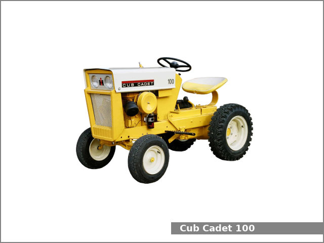
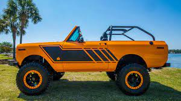
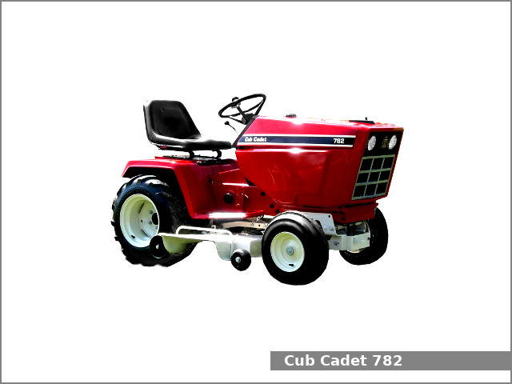

Michael Walker, Sr. - Hobbies |
|  |  |  |
I do not really get as much time to enjoy my hobbies as I would like, but when I do get time I like to work on my old cars and tractors. I currently have three old International Harvester Scouts. A 1962 scout and two 1976 Scout II Terra's. One of the 76 Scouts was my first car. My dad bought it for $5 dollars from one of the dealerships he went to for work. He traveled around all over the state of Illinois to the IH dealerships and worked on warranty claims and helped with any trucks that the other mechanics had problems with fixing.
My dad and I worked for over a year to rebuild my 5 dollar truck. We took it completely apart. We put on a new body, installed a different engine that we rebuilt ourselves. It was a lot of fun and I was glad we had that time togher. He passed away shortly after we finished the truck. Even though it needs more work today, I still have it and would not take a million dollars for it.
I also love to work on my old IH Cub Cadet tractors too. My dad and I also rebuilt one of those when I was around 7 years old. I do not have that one any more but I have one that is the same model that I still use to mow my yard. I get a lot of looks mowing with a tractor that is older than me, by six years! I have so many of these old tractors I am not really sure how many I have. Somewhere around 9 I think.
I hope to have more time once I finish school to work on my old cars and tractors but for now I will have to settle for tinkering around when time allows.